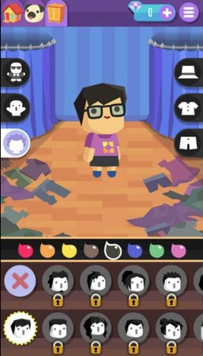
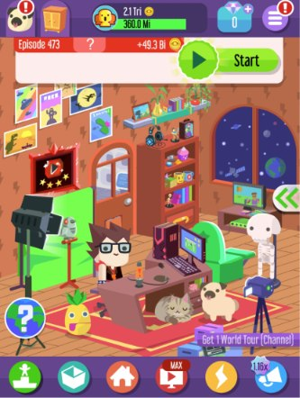
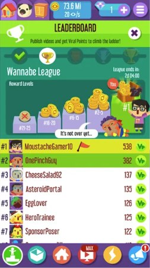
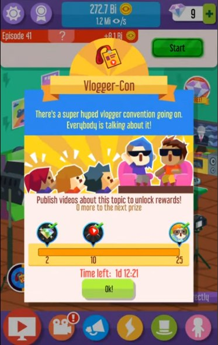
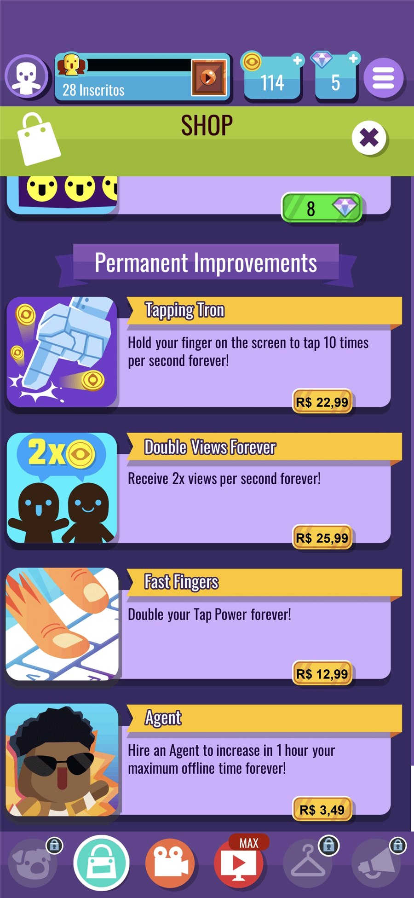
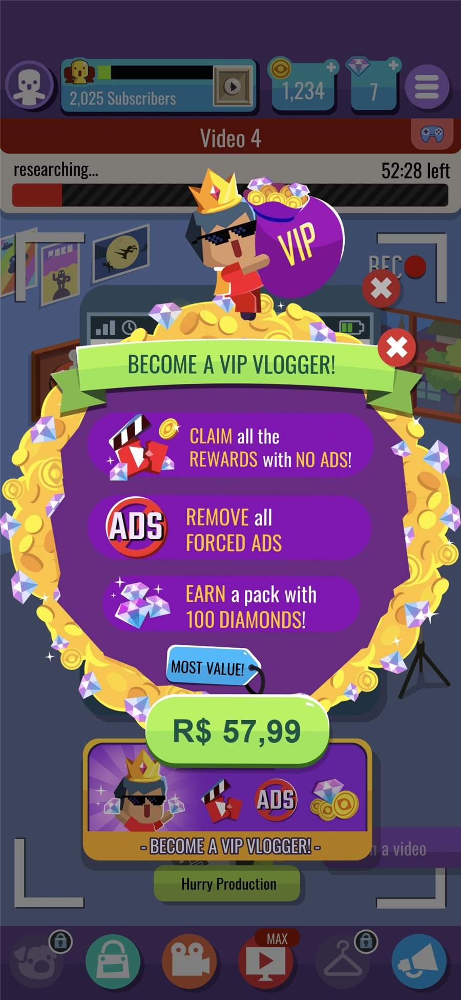
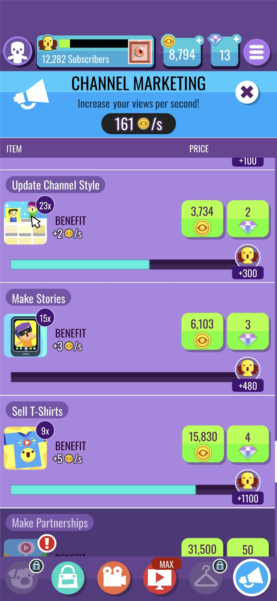
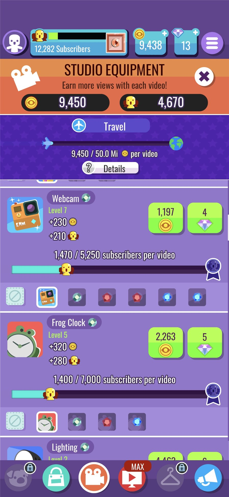

Vlogger Go Viral: Tuber Life is a free-to-play idle simulator about building a YouTube career. Players upload videos to gain views and subscribers, upgrade their home studio with better equipment and customize their avatar with hundreds of skins and accessories. Daily missions and rewards, partnerships and PR moments such as magazine interviews and TV appearances keep the climb going, even offline.
I joined Vlogger Go Viral when it was already live, as the only game designer in a five-person team. In a game monetized mainly through ads, the main fight was against the natural depreciation that games face in the stores over time.
The team's goal was to delay that decline, with data-driven A/B tests on progression and monetization and with events that worked directly on retention.
Customization is a core motivation in the game: the player decorates the vlogger's scenarios and personalizes characters and elements. The unlockable items are tied to the progression of the game, so customizing is not a one-off activity but a long-term goal. As the player progresses, they unlock more expressive and rarer items, which gives meaning to progress and a visible reward for it. This connects self-expression, one of the strongest motivations of the genre, with the progression loop and gives players a reason to keep advancing.


Events keep the player engaged beyond the regular loop. A competitive event adds a goal based on comparison with other players and a sense of achievement, and a cooperative event adds a collective goal and a sense of belonging. Together they give players reasons to come back on a schedule, renew the experience without new core mechanics, and extend the longevity of the game through repetition with variety. This kind of feature is also a natural place to reward both players who like to compete and players who prefer to cooperate.


A/B tests were run on time, on the cost of the currencies and on the benefits offered to the player. Testing matters in games, especially in free-to-play and live games, because design intuition alone is not enough to find the right balance between the value delivered to the player and the revenue. Different versions of the same offer reveal how players actually respond, which lets the team decide with data, reduce the risk of changes before applying them to the whole player base, and improve retention and monetization step by step.
New packs were designed to meet a demand that was not being offered. Offering the right pack for a need the player already has makes the purchase feel like value and not like pressure, which supports revenue while keeping the experience healthy and the player's trust.


Upgrades are the lever that lets the player progress, and they give an outlet both to the need for monetization and to the sense of progress. Each upgrade turns resources into a visible gain, such as more views per second or more subscribers per video, so the player feels the game moving forward. When progress slows down, the natural way to speed it up is to spend resources, which is where monetization finds its place without breaking the experience.


In ad-driven games, store visibility and engagement fall naturally over time, and few players completed the seasonal events through to the end. The answer was to restructure the events (goals, completion mechanics and duration) and add quality-of-life features that improved the daily experience, with a focus on retention.
In an ad-driven game, monetization is part of the experience itself. Beyond testing rewards and how often players used the features tied to ads, the store's hierarchy was not highlighting the most interesting offers, so it was restructured to give more prominence to the most advantageous bundles.
Progression speed affects both retention and monetization, and the right pace was not obvious. The hypothesis was that unlocking features earlier would lead players to engage with them sooner and return for more days, improving D30 retention. The economy values were adjusted to support each test, and the decision came from comparing the versions.
During the period of work on the project, the team managed to delay the negative effects of the natural depreciation that ad-focused games face in the stores.
In an ad-driven game, small and tested changes were what bought time.